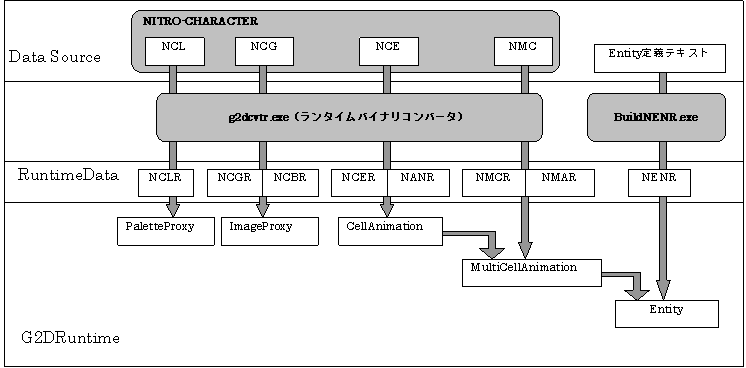
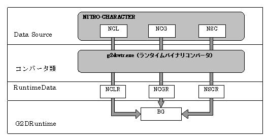

.ncg file. There are two runtime binary formats, .ncgr and .ncbr. When using character data for rendering with the 2D graphics engine, it needs to be output in the character format (.ncg) where the pixels are aligned every 8 x 8 pixels. When using character data for rendering with the 3D graphics engine, it needs to be output in the bitmap format (.ncbr) where the pixels are aligned along the same line as the original image pixels. The OBJ character data has two types of mapping format, 1D mapping and 2D mapping. The manner in which characters are aligned varies depending on the mapping format. Be aware of the fact that in order for the converter to obtain information about the mapping format, the .nce file is required. BG character data has only 2D mapping and does not require an .nce file. However, the converter has no way of determining if the character data is for OBJ or BG so you need to specify the -bg option before conversion. During .nsc file conversion the -bg option is specified automatically.
.ncl file of the NITRO-CHARACTER binary file by the binary converter.
.nce file or .nmc file. It is output as a binary file with the extension .nanr or .nmar..nce file of the NITRO-CHARACTER binary file by the binary converter. It is output as a binary file with the extension .ncer. The information required during VRAM transfer animation is also stored in this file (if the -vta option is specified during conversion).
.nmc file of the NITRO-CHARACTER binary file by the binary converter. It is output as a binary file with the extension .nmcr. BuildNENR.exe, and is output as a binary file with the extension .nenr or .nmar.

Screen data stores the screen information used in BG display. It is created from the .nsc file of the NITRO-CHARACTER binary file by the binary converter.
None.
12/06/2004 Initial version.